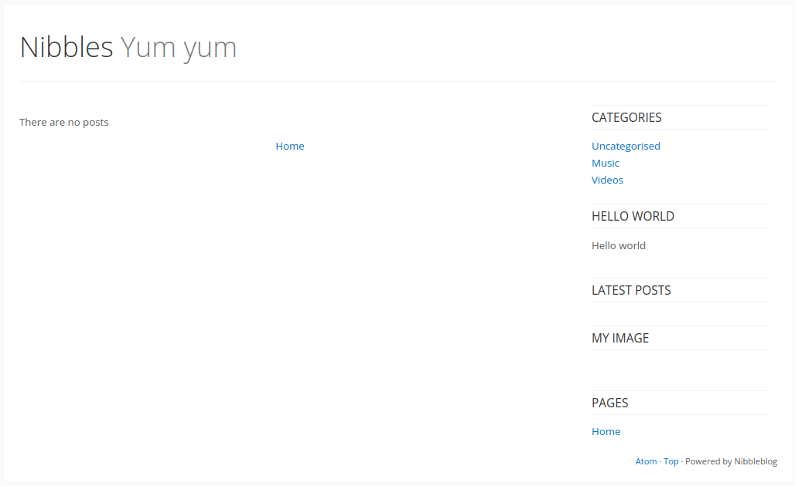
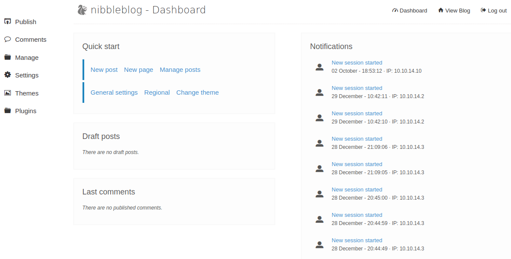
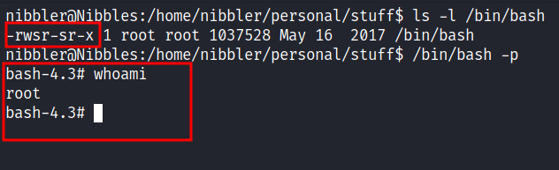

HackTheBox - Nibbles Writeup
Table of Contents
Nmap
Like always, I’m going to scan the IP address by using Nmap. However, today I feel spicier ;). So, I’m going to scan the full port with -p- then I’m only scanning those open ports with scripts and version enumeration.
nmap -sCV -p22,80 -oN nmap/nibbles 10.10.10.75
22/tcp open ssh OpenSSH 7.2p2 Ubuntu 4ubuntu2.2 (Ubuntu Linux; protocol 2.0)
| ssh-hostkey:
| 2048 c4:f8:ad:e8:f8:04:77:de:cf:15:0d:63:0a:18:7e:49 (RSA)
| 256 22:8f:b1:97:bf:0f:17:08:fc:7e:2c:8f:e9:77:3a:48 (ECDSA)
|_ 256 e6:ac:27:a3:b5:a9:f1:12:3c:34:a5:5d:5b:eb:3d:e9 (ED25519)
80/tcp open http Apache httpd 2.4.18 ((Ubuntu))
|_http-title: Site doesn't have a title (text/html).
|_http-server-header: Apache/2.4.18 (Ubuntu)
Service Info: OS: Linux; CPE: cpe:/o:linux:linux_kernel
The nmap scan is completed and looks like I’m only dealing with port 22 and 80. The banner itself says this machine is a linux box and running ubuntu.
Http
With that information, I’m going straight to my browser and navigating to the IP address, and surprisingly it only displays Hello world! with bold text. Upon expecting the source of the page it’s leaking the directory called /nibbleblog/.

Http: /nibbleblog
By navigating through that directory. I’ve been greeted with some sort of blog page title Nibbles - Yum yum. Then, I started guessing the index file with different extensions and I got a hit with PHP extensions. Turns out, this is a PHP website. So, I started to look around in that blog and cannot find anything useful.

Gobuster
Now, I’m going to fire off my guns (jk). Gobuster to enumerate further and look for any hidden directories and files. Sure enough, it’s managed to find the login page located /admin.php but I did not have any credentials on me right now. Also, the /admin directory caught my eye but again I cannot find anything useful.

Http: /nibbleblog/content/
The /content directory also attracts my intentions by having such a unique name :). Upon enumerating the content of it. Finally, I manage to find something useful this time and it was a username located in /nibbleblog/content/private/users.xml. Now, I have equipped with the username but I did not manage to find any password at all.

Http: /admin.php
Only with the username in my hands, I’m heading to the login page by navigating through /nibbleblog/admin.php and start guessing the password. Suppringsly, I manage to get it correctly and the password is nibbles. Yeah, the name of the box itself.

By clicking the Settings on the left sidebar and scrolling at the bottom. Its displays the version of it.

Foothold
Without further ado, I’m asking my old friend Mr.Google regarding this version. Turns out, this particular version has an assigned CVE to it called CVE-2015-6967 it’s vulnerable to Unrestricted file upload in the My Image plugin. So, I’m ready to upload the php reverse shell but first, I need to navigate through Plugins -> My Image -> Configure. Then, upload the shell (just ignore the warning), and to execute it, I must click the shell that is located in /nibbleblog/content/private/plugins/my_image/.

PrivEsc: monitor.sh
Viola! I’m in as a nibbler user and the best thing to do is upgrade my shells with python3. My favorite thing to do after getting a shell is checking the user sudo permission with the command sudo -l. *Jaw dropped*, apparently I can run the monitor.sh file as sudo without any password needed. Awesome!

However, when I’m in nibbler’s home directory. I cannot find the monitor.sh file but I find a zip archive file called personal.zip. So, I unzip that archive, and hold and behold there is the monitor.sh file. Upon expecting the script of it, I did not find it amusing. However, the file itself has an interesting character that I can write into the file.
Root
So, I’d end up putting one line command when executed it. It will make a /bin/bash as a setuid binary. Then, I’m typing this command /bin/bash -p and it will drop me into the root shell.
echo "chmod +s /bin/bash" >> monitor.sh
